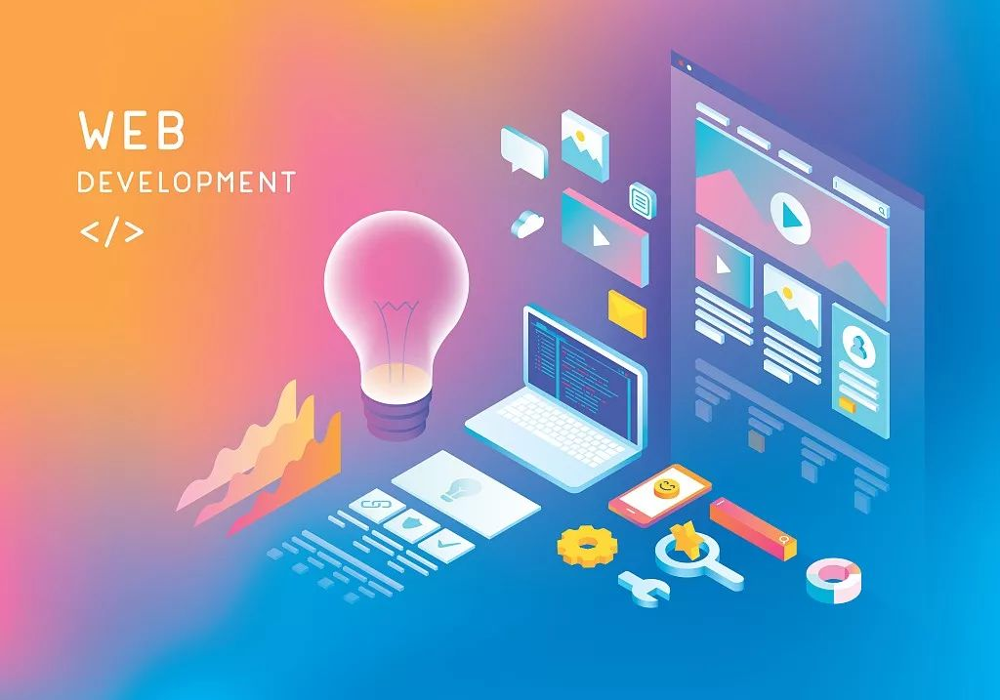

欢迎来到前端学习之旅

这里是您学习前端技术的起点。
前端是互联网开发中与用户直接交互的部分，主要负责网页或应用的界面设计、交互逻辑和用户体验。前端技术栈包括HTML、CSS和JavaScript等核心语言，以及React、Vue.js、Angular等现代前端框架。这些技术共同协作，使得网页能够动态展示内容、响应用户操作，并提供丰富的视觉和交互效果。前端开发者需具备良好的审美、设计能力和编程技巧，以确保网页的易用性、美观性和性能。随着移动互联网的普及，前端技术也在不断发展，以适应更多样化的设备和用户需求。
学习路径
- HTML基础HTML是网页的基础语言，用于定义网页结构和内容。
- CSS样式CSS样式用于定义网页元素的布局、颜色和字体等外观。
- JavaScript编程JavaScript是网页开发的脚本语言，用于实现动态内容和交互。
- 前端框架前端框架如React、Vue.js和Angular，简化DOM操作，提升开发效率与页面性能。
资源推荐
书籍
- 《JavaScript高级程序设计》
- 《CSS权威指南》
在线课程
- Coursera上的前端课程
- Udemy上的JavaScript教程